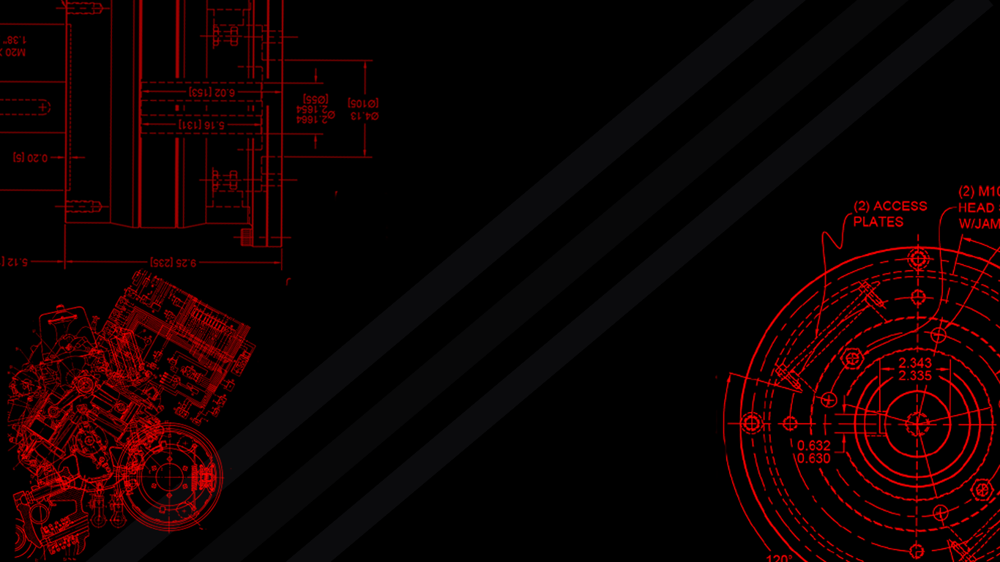
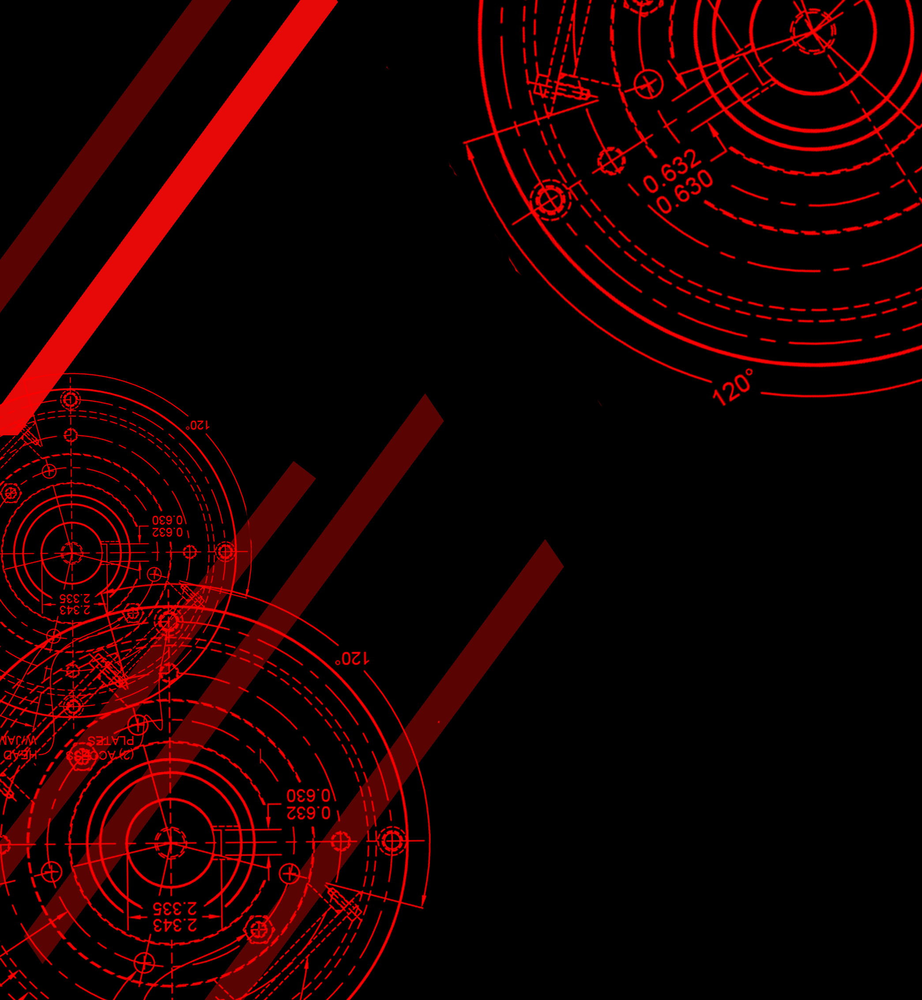

A Weboldal hátterének megtervezésével kezdtem az egész projektet. Két fajta háttérre volt szükség, amelyeket Photoshopban terveztem meg Az egyik a kezdőoldal háttere, amelynél nem lehet görgetni az oldalon. A többi oldalon egy másmilyen arányú kép van jelen amely lehetővé teszi a görgetést.
 A különböző oldalak felépítésé:
Fejléc teljes mértékben közös az oldalakon, viszont a többi tartalom felépítése különbözik.
A rólam oldal galéria részét a w3school segítségével csináltam. Így könnyen méretezi át magát a különböző képernyőkhöz.
Legnagyobb nehézséget az oldalak újra méretezésének elérése volt. Internetes segítségeket használtam, főleg a w3school oldalát.